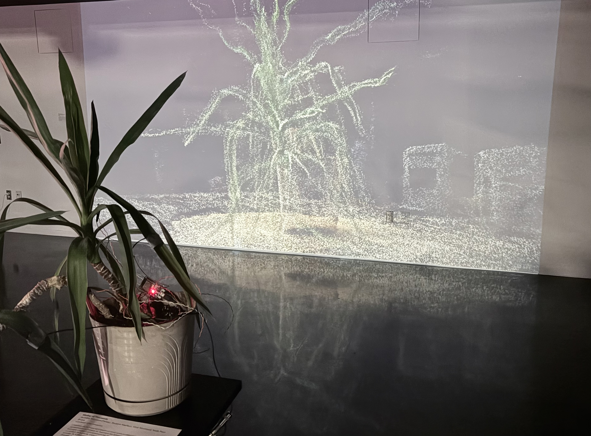
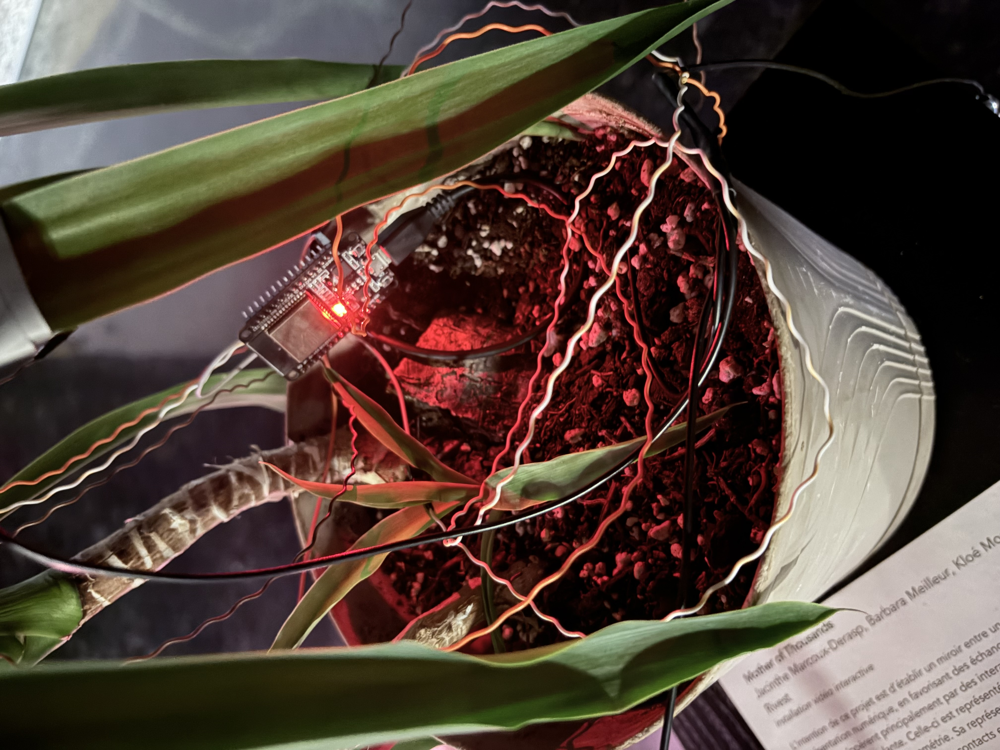
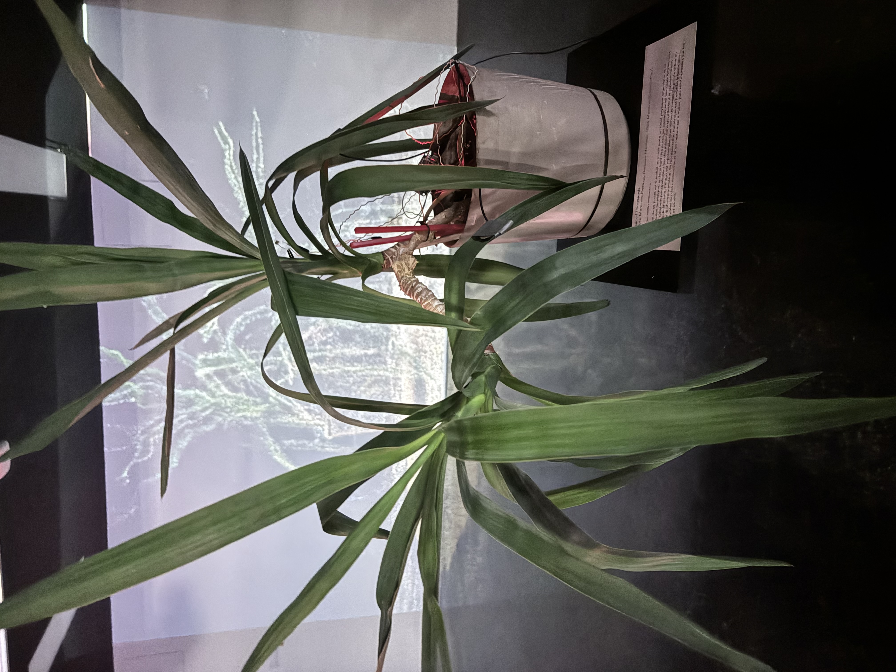
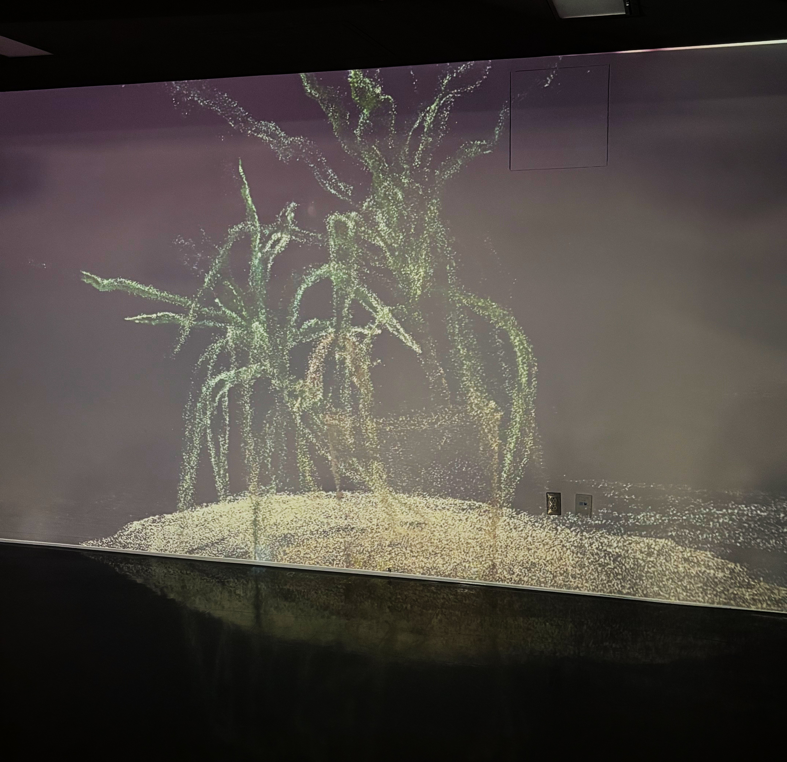
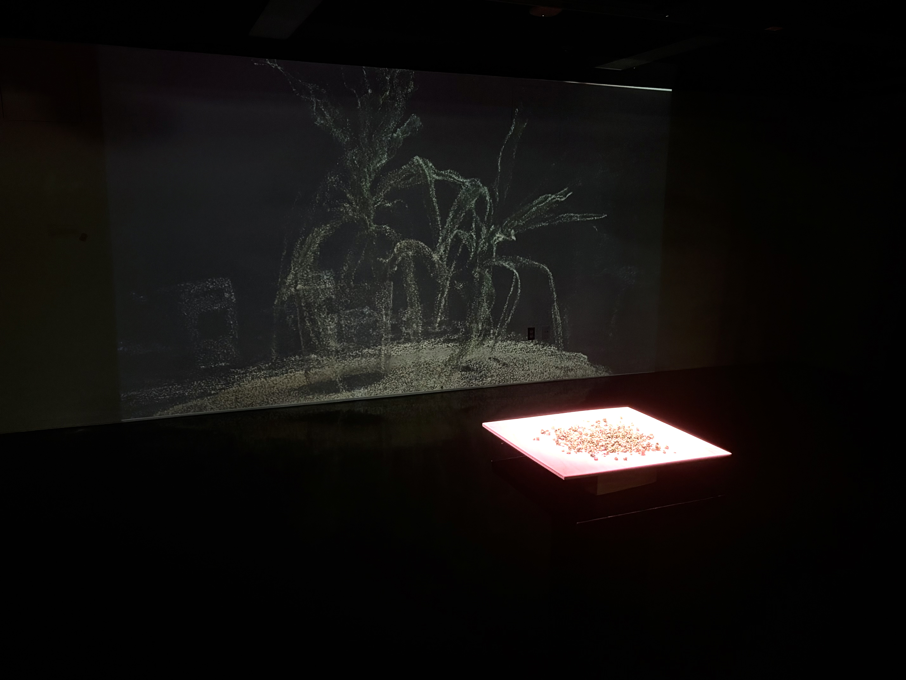
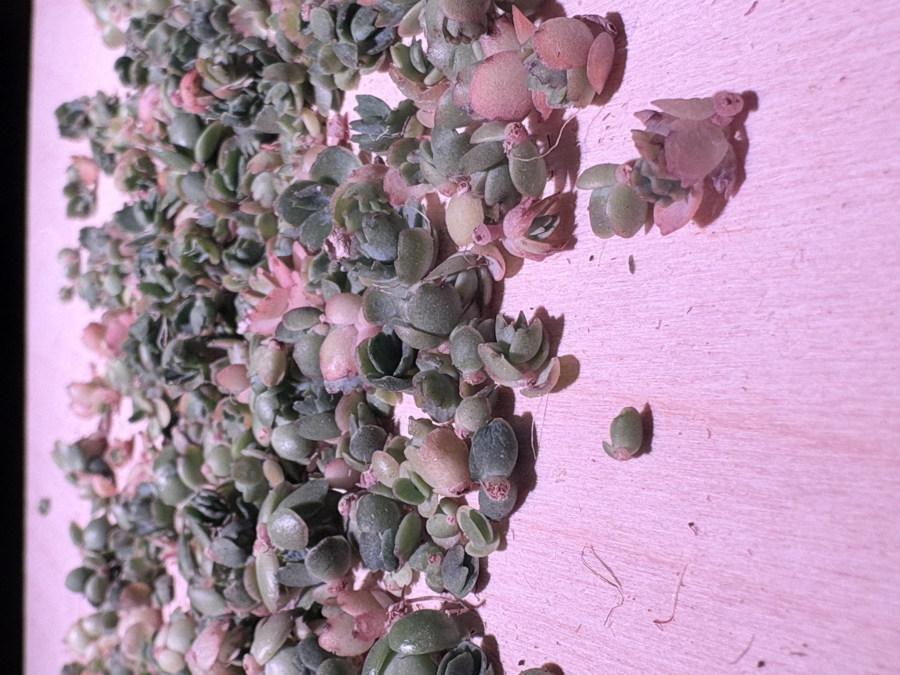

Installation vidéo interactive.
Développé dans le cadre de la marmelade des jours J
L’intention de ce projet est d’établir un miroir entre un objet physique organique et
sa représentation numérique, en favorisant des échanges continus entre ces deux
formes. Ces échanges s’opèrent principalement par des interactions qui affectent
la représentation numérique de la plante. Celle-ci est représentée sous forme de
nuage de points grâce au principe de la photogrammétrie. Sa représentation
numérique est modifiée à partir des données captées par des microcontacts et un
capteur de lumière, puis réinterprétées sur les plans visuel et sonore.
Collaborateurs: Barbara Meilleur, Jacinthe Marcoux-Derasp, Kloé Montreuil .